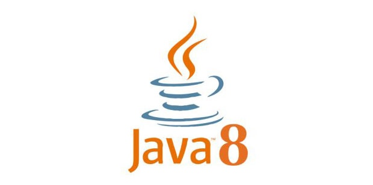

Java 8新特性：新的时间和日期API
Java 8另一个新增的重要特性就是引入了新的时间和日期API，它们被包含在
java.time包中。借助新的时间和日期API可以以更简洁的方法处理时间和日期。

在介绍本篇文章内容之前，我们先来讨论Java 8为什么要引入新的日期API，与之前的时间和日期处理方式有什么不同？
在Java 8之前，所有关于时间和日期的API都存在各种使用方面的缺陷，主要有：
- Java的
java.util.Date和java.util.Calendar类易用性差，不支持时区，而且他们都不是线程安全的； - 用于格式化日期的类
DateFormat被放在java.text包中，它是一个抽象类，所以我们需要实例化一个SimpleDateFormat对象来处理日期格式化，并且DateFormat也是非线程安全，这意味着如果你在多线程程序中调用同一个DateFormat对象，会得到意想不到的结果。 - 对日期的计算方式繁琐，而且容易出错，因为月份是从0开始的，从
Calendar中获取的月份需要加一才能表示当前月份。
由于以上这些问题，出现了一些三方的日期处理框架，例如Joda-Time，date4j等开源项目。但是，Java需要一套标准的用于处理时间和日期的框架，于是Java 8中引入了新的日期API。新的日期API是JSR-310规范的实现，Joda-Time框架的作者正是JSR-310的规范的倡导者，所以能从Java 8的日期API中看到很多Joda-Time的特性。
Java 8日期/时间类
Java 8的日期和时间类包含LocalDate、LocalTime、Instant、Duration以及Period，这些类都包含在java.time包中，下面我们看看这些类的用法。
LocalDate和LocalTime
LocalDate类表示一个具体的日期，但不包含具体时间，也不包含时区信息。可以通过LocalDate的静态方法of()创建一个实例，LocalDate也包含一些方法用来获取年份，月份，天，星期几等：
LocalDate localDate = LocalDate.of(2017, 1, 4); // 初始化一个日期：2017-01-04
int year = localDate.getYear(); // 年份：2017
Month month = localDate.getMonth(); // 月份：JANUARY
int dayOfMonth = localDate.getDayOfMonth(); // 月份中的第几天：4
DayOfWeek dayOfWeek = localDate.getDayOfWeek(); // 一周的第几天：WEDNESDAY
int length = localDate.lengthOfMonth(); // 月份的天数：31
boolean leapYear = localDate.isLeapYear(); // 是否为闰年：false
也可以调用静态方法now()来获取当前日期：
LocalDate now = LocalDate.now();
LocalTime和LocalDate类似，他们之间的区别在于LocalDate不包含具体时间，而LocalTime包含具体时间，例如：
LocalTime localTime = LocalTime.of(17, 23, 52); // 初始化一个时间：17:23:52
int hour = localTime.getHour(); // 时：17
int minute = localTime.getMinute(); // 分：23
int second = localTime.getSecond(); // 秒：52
LocalDateTime
LocalDateTime类是LocalDate和LocalTime的结合体，可以通过of()方法直接创建，也可以调用LocalDate的atTime()方法或LocalTime的atDate()方法将LocalDate或LocalTime合并成一个LocalDateTime：
LocalDateTime ldt1 = LocalDateTime.of(2017, Month.JANUARY, 4, 17, 23, 52);
LocalDate localDate = LocalDate.of(2017, Month.JANUARY, 4);
LocalTime localTime = LocalTime.of(17, 23, 52);
LocalDateTime ldt2 = localDate.atTime(localTime);
LocalDateTime也提供用于向LocalDate和LocalTime的转化：
LocalDate date = ldt1.toLocalDate();
LocalTime time = ldt1.toLocalTime();
Instant
Instant用于表示一个时间戳，它与我们常使用的System.currentTimeMillis()有些类似，不过Instant可以精确到纳秒（Nano-Second），System.currentTimeMillis()方法只精确到毫秒（Milli-Second）。如果查看Instant源码，发现它的内部使用了两个常量，seconds表示从1970-01-01 00:00:00开始到现在的秒数，nanos表示纳秒部分（nanos的值不会超过999,999,999）。Instant除了使用now()方法创建外，还可以通过ofEpochSecond方法创建：
Instant instant = Instant.ofEpochSecond(120, 100000);
ofEpochSecond()方法的第一个参数为秒，第二个参数为纳秒，上面的代码表示从1970-01-01 00:00:00开始后两分钟的10万纳秒的时刻，控制台上的输出为：
1970-01-01T00:02:00.000100Z
Duration
Duration的内部实现与Instant类似，也是包含两部分：seconds表示秒，nanos表示纳秒。两者的区别是Instant用于表示一个时间戳（或者说是一个时间点），而Duration表示一个时间段，所以Duration类中不包含now()静态方法。可以通过Duration.between()方法创建Duration对象：
LocalDateTime from = LocalDateTime.of(2017, Month.JANUARY, 5, 10, 7, 0); // 2017-01-05 10:07:00
LocalDateTime to = LocalDateTime.of(2017, Month.FEBRUARY, 5, 10, 7, 0); // 2017-02-05 10:07:00
Duration duration = Duration.between(from, to); // 表示从 2017-01-05 10:07:00 到 2017-02-05 10:07:00 这段时间
long days = duration.toDays(); // 这段时间的总天数
long hours = duration.toHours(); // 这段时间的小时数
long minutes = duration.toMinutes(); // 这段时间的分钟数
long seconds = duration.getSeconds(); // 这段时间的秒数
long milliSeconds = duration.toMillis(); // 这段时间的毫秒数
long nanoSeconds = duration.toNanos(); // 这段时间的纳秒数
Duration对象还可以通过of()方法创建，该方法接受一个时间段长度，和一个时间单位作为参数：
Duration duration1 = Duration.of(5, ChronoUnit.DAYS); // 5天
Duration duration2 = Duration.of(1000, ChronoUnit.MILLIS); // 1000毫秒
Period
Period在概念上和Duration类似，区别在于Period是以年月日来衡量一个时间段，比如2年3个月6天：
Period period = Period.of(2, 3, 6);
Period对象也可以通过between()方法创建，值得注意的是，由于Period是以年月日衡量时间段，所以between()方法只能接收LocalDate类型的参数：
// 2017-01-05 到 2017-02-05 这段时间
Period period = Period.between(
LocalDate.of(2017, 1, 5),
LocalDate.of(2017, 2, 5));
日期的操作和格式化
增加和减少日期
Java 8中的日期/时间类都是不可变的，这是为了保证线程安全。当然，新的日期/时间类也提供了方法用于创建对象的可变版本，比如增加一天或者减少一天：
LocalDate date = LocalDate.of(2017, 1, 5); // 2017-01-05
LocalDate date1 = date.withYear(2016); // 修改为 2016-01-05
LocalDate date2 = date.withMonth(2); // 修改为 2017-02-05
LocalDate date3 = date.withDayOfMonth(1); // 修改为 2017-01-01
LocalDate date4 = date.plusYears(1); // 增加一年 2018-01-05
LocalDate date5 = date.minusMonths(2); // 减少两个月 2016-11-05
LocalDate date6 = date.plus(5, ChronoUnit.DAYS); // 增加5天 2017-01-10
上面例子中对于日期的操作比较简单，但是有些时候我们要面临更复杂的时间操作，比如将时间调到下一个工作日，或者是下个月的最后一天，这时候我们可以使用with()方法的另一个重载方法，它接收一个TemporalAdjuster参数，可以使我们更加灵活的调整日期：
LocalDate date7 = date.with(nextOrSame(DayOfWeek.SUNDAY)); // 返回下一个距离当前时间最近的星期日
LocalDate date9 = date.with(lastInMonth(DayOfWeek.SATURDAY)); // 返回本月最后一个星期六
要使上面的代码正确编译，你需要使用静态导入TemporalAdjusters对象：
import static java.time.temporal.TemporalAdjusters.*;
TemporalAdjusters类中包含了很多静态方法可以直接使用，下面的表格列出了一些方法：
| 方法名 | 描述 |
|---|---|
dayOfWeekInMonth |
返回同一个月中每周的第几天 |
firstDayOfMonth |
返回当月的第一天 |
firstDayOfNextMonth |
返回下月的第一天 |
firstDayOfNextYear |
返回下一年的第一天 |
firstDayOfYear |
返回本年的第一天 |
firstInMonth |
返回同一个月中第一个星期几 |
lastDayOfMonth |
返回当月的最后一天 |
lastDayOfNextMonth |
返回下月的最后一天 |
lastDayOfNextYear |
返回下一年的最后一天 |
lastDayOfYear |
返回本年的最后一天 |
lastInMonth |
返回同一个月中最后一个星期几 |
next / previous |
返回后一个/前一个给定的星期几 |
nextOrSame / previousOrSame |
返回后一个/前一个给定的星期几，如果这个值满足条件，直接返回 |
如果上面表格中列出的方法不能满足你的需求，你还可以创建自定义的TemporalAdjuster接口的实现，TemporalAdjuster也是一个函数式接口，所以我们可以使用Lambda表达式：
@FunctionalInterface
public interface TemporalAdjuster {
Temporal adjustInto(Temporal temporal);
}
比如给定一个日期，计算该日期的下一个工作日（不包括星期六和星期天）：
LocalDate date = LocalDate.of(2017, 1, 5);
date.with(temporal -> {
// 当前日期
DayOfWeek dayOfWeek = DayOfWeek.of(temporal.get(ChronoField.DAY_OF_WEEK));
// 正常情况下，每次增加一天
int dayToAdd = 1;
// 如果是星期五，增加三天
if (dayOfWeek == DayOfWeek.FRIDAY) {
dayToAdd = 3;
}
// 如果是星期六，增加两天
if (dayOfWeek == DayOfWeek.SATURDAY) {
dayToAdd = 2;
}
return temporal.plus(dayToAdd, ChronoUnit.DAYS);
});
格式化日期
新的日期API中提供了一个DateTimeFormatter类用于处理日期格式化操作，它被包含在java.time.format包中，Java 8的日期类有一个format()方法用于将日期格式化为字符串，该方法接收一个DateTimeFormatter类型参数：
LocalDateTime dateTime = LocalDateTime.now();
String strDate1 = dateTime.format(DateTimeFormatter.BASIC_ISO_DATE); // 20170105
String strDate2 = dateTime.format(DateTimeFormatter.ISO_LOCAL_DATE); // 2017-01-05
String strDate3 = dateTime.format(DateTimeFormatter.ISO_LOCAL_TIME); // 14:20:16.998
String strDate4 = dateTime.format(DateTimeFormatter.ofPattern("yyyy-MM-dd")); // 2017-01-05
String strDate5 = dateTime.format(DateTimeFormatter.ofPattern("今天是：YYYY年 MMMM DD日 E", Locale.CHINESE)); // 今天是：2017年 一月 05日 星期四
同样，日期类也支持将一个字符串解析成一个日期对象，例如：
String strDate6 = "2017-01-05";
String strDate7 = "2017-01-05 12:30:05";
LocalDate date = LocalDate.parse(strDate6, DateTimeFormatter.ofPattern("yyyy-MM-dd"));
LocalDateTime dateTime1 = LocalDateTime.parse(strDate7, DateTimeFormatter.ofPattern("yyyy-MM-dd HH:mm:ss"));
时区
Java 8中的时区操作被很大程度上简化了，新的时区类java.time.ZoneId是原有的java.util.TimeZone类的替代品。ZoneId对象可以通过ZoneId.of()方法创建，也可以通过ZoneId.systemDefault()获取系统默认时区：
ZoneId shanghaiZoneId = ZoneId.of("Asia/Shanghai");
ZoneId systemZoneId = ZoneId.systemDefault();
of()方法接收一个“区域/城市”的字符串作为参数，你可以通过getAvailableZoneIds()方法获取所有合法的“区域/城市”字符串：
Set zoneIds = ZoneId.getAvailableZoneIds();
对于老的时区类TimeZone，Java 8也提供了转化方法：
ZoneId oldToNewZoneId = TimeZone.getDefault().toZoneId();
有了ZoneId，我们就可以将一个LocalDate、LocalTime或LocalDateTime对象转化为ZonedDateTime对象：
LocalDateTime localDateTime = LocalDateTime.now();
ZonedDateTime zonedDateTime = ZonedDateTime.of(localDateTime, shanghaiZoneId);
将zonedDateTime打印到控制台为：
2017-01-05T15:26:56.147+08:00[Asia/Shanghai]
ZonedDateTime对象由两部分构成，LocalDateTime和ZoneId，其中2017-01-05T15:26:56.147部分为LocalDateTime，+08:00[Asia/Shanghai]部分为ZoneId。
另一种表示时区的方式是使用ZoneOffset，它是以当前时间和世界标准时间（UTC）/格林威治时间（GMT）的偏差来计算，例如：
ZoneOffset zoneOffset = ZoneOffset.of("+09:00");
LocalDateTime localDateTime = LocalDateTime.now();
OffsetDateTime offsetDateTime = OffsetDateTime.of(localDateTime, zoneOffset);
其他历法
Java中使用的历法是ISO 8601日历系统，它是世界民用历法，也就是我们所说的公历。平年有365天，闰年是366天。闰年的定义是：非世纪年，能被4整除；世纪年能被400整除。为了计算的一致性，公元1年的前一年被当做公元0年，以此类推。
此外Java 8还提供了4套其他历法（很奇怪为什么没有汉族人使用的农历），每套历法都包含一个日期类，分别是：
ThaiBuddhistDate：泰国佛教历MinguoDate：中华民国历JapaneseDate：日本历HijrahDate：伊斯兰历
每个日期类都继承ChronoLocalDate类，所以可以在不知道具体历法的情况下也可以操作。不过这些历法一般不常用，除非是有某些特殊需求情况下才会使用。
这些不同的历法也可以用于向公历转换：
LocalDate date = LocalDate.now();
JapaneseDate jpDate = JapaneseDate.from(date);
由于它们都继承ChronoLocalDate类，所以在不知道具体历法情况下，可以通过ChronoLocalDate类操作日期：
Chronology jpChronology = Chronology.ofLocale(Locale.JAPANESE);
ChronoLocalDate jpChronoLocalDate = jpChronology.dateNow();
我们在开发过程中应该尽量避免使用ChronoLocalDate，尽量用与历法无关的方式操作时间，因为不同的历法计算日期的方式不一样，比如开发者会在程序中做一些假设，假设一年中有12个月，如果是中国农历中包含了闰月，一年有可能是13个月，但开发者认为是12个月，多出来的一个月属于明年的。再比如假设年份是累加的，过了一年就在原来的年份上加一，但日本天皇在换代之后需要重新纪年，所以过了一年年份可能会从1开始计算。
在实际开发过程中建议使用LocalDate，包括存储、操作、业务规则的解读；除非需要将程序的输入或者输出本地化，这时可以使用ChronoLocalDate类。
转载出处：https://lw900925.github.io/java/java8-newtime-api.html#more
Copyright © 2019
Powered by 见课就上的小婊砸,
京ICP备18064309号